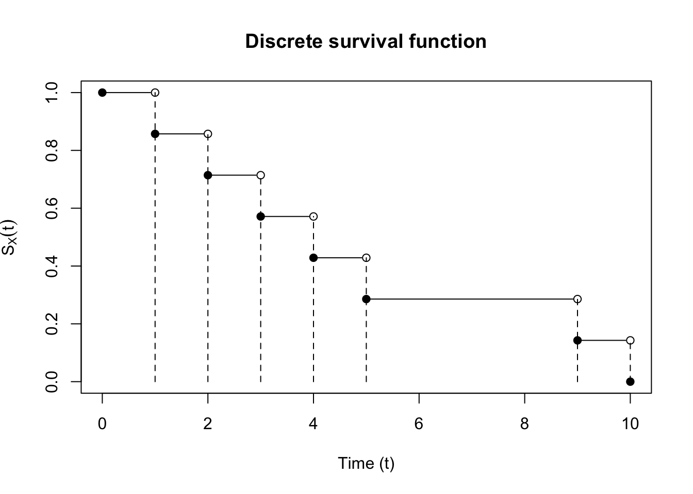

Lecture 1
1 Introduction
This introduction is based in part on Klein, Moeschberger, et al. (2003), and in part on Aalen, Borgan, and Gjessing (2008) plus Fleming and Harrington (2005).
Survival analysis is the modeling and analysis of time-to-event data; this means we will be studying how to model random variables (time will always be measured in such a way so that the observations are nonnegative). Think about a clinical trial for a new COVID vaccine and how you might model the length of time between study entry and infection in each arm of the trial. Let \(X_i\) be the time from trial entry to infection for the \(i\)-th participant. These sorts of trials are typically run until a prespecified number of people have become infected. Let \(n\) be the total number of participants in the trial and let \(r\) be the prespecified number of infections. Let \(T_i\) be the observed infection time for the \(i\)-th participant. This means that for \(r\) participants, \(T_i = X_i\), but for \(n-r\) participants we know only that the time-to-infection is larger than the observed time. Let \(C_i\) denote the time from study entry for participant \(i\) to study end. Then \(T_i = \min (X_i, C_i)\), and let \(\delta_i = \ind{T_i = X_i}\). The density of \(T_i\) is related to the joint probability for \(X_i\) and \(C_i\), which is indexed by a possibly infinite dimensional parameter \(\theta\): \(P_{\theta}(X_i > t, C_i > c)\). When \(\delta_i = 1\), and \(T_i = X_i\), the likelihood of the observation is \[ \left.\lp-\frac{\partial}{\partial u}P_{\theta}(X_i > u, C_i > t)\rp\right\rvert_{u = t}, \] while the likelihood for \(\delta_i = 0\) is \[ \left.\lp-\frac{\partial}{\partial u}P_{\theta}(X_i > t, C_i > u)\rp\right\rvert_{u = t}, \] Then \(T_i = C_i\) for the other \(n-r\) participants. Under the null hypothesis that the vaccine has no effect, the population distribution function for all \(n\) participants for \(X_i, C_i\) is \(P_{\theta}(X_1 > x, C_1 > c)\) (i.e. the distribution for survival times in the treatment group and the placebo group is the same). Then the joint density for the observed infection times is as follows: \[\begin{align*} f_{T_1, \dots, T_n}(t_1, \dots, t_n ;\, \theta) & = n! \prod_{i=1}^r \left.\lp-\frac{\partial}{\partial u}P_{\theta}(X_1 > u, C_1 > t_{(i)})\rp\right\rvert_{u = t_{(i)}} \\ & \times \prod_{i=r+1}^n \left.\lp-\frac{\partial}{\partial u}P_{\theta}(X_1 > t_{(i)}, C_1 > u)\rp\right\rvert_{u = t_{(i)}}, \end{align*}\] where \(t_{(i)}\) is the \(i\)-th order statistic of the set \(\{t_1, \dots, t_n\}\). Note that this is different from most other data analysis where missing observations are not expected to occur with much frequency. On the contrary, in survival analysis, missingness, both truncation and censoring are expected to occur with nearly every dataset, so much of our time will be spent ensuring our methods work when data arise with these peculiarities.
1.1 Independent censoring
Now suppose that \(X_1 \indy C_1\), and that \(\theta\) partitions into \(\eta\) and \(\phi\), such that \[ P_{\theta}(X_1 > x, C_1 > c) = P_{\eta}(X_1 > x)P_{\phi}(C_1 > c). \] Then we can rewrite the joint observational density for \(T_i\) as: \[\begin{align*} f_{T_1, \dots, T_n}(t_1, \dots, t_n ;\, \theta) & = n! \lp \prod_{i=1}^r f_{X_1}(t_{(i)} ;\, \eta) \rp \prod_{i=r+1}^n P_{\eta}(X_1 > t_{(i)}) \\ & \times \lp \prod_{i=1}^r P_{\phi}(C_1 > t_{(i)}) \rp \prod_{i=r+1}^n f_C(t_{(i)} ;\, \phi). \end{align*}\] If we are only interested about inference about \(\eta\), the parameters that govern the distribution of the true time-to-infection random variables, we can ignore the the distribution for the censoring random variables \(C_1\), and maximize the likelihood because, in \(\eta\): \[\begin{align*} f_{T_1, \dots, T_n}(t_1, \dots, t_n ;\, \eta) \propto \lp \prod_{i=1}^r f_{X_1}(t_{(i)} ;\, \eta) \rp \prod_{i=r+1}^n P_{\eta}(X_1 > t_{(i)}) \end{align*}\] We will talk in more detail about censoring in the coming lectures.
2 Mean time to failure
Aalen, Borgan, and Gjessing (2008) notes that we cannot even compute a simple mean in this situation, so something like a t-test will be useless. As an aside, let’s try to compute a mean from the data above. Let \(\bar{T} = \frac{1}{n} \sum_{i=1}^n T_i\). We can show that \(\lim_{n \to \infty} \bar{T} \leq \Exp{X_i}\) with probability \(1\).
Proof. Let \(T_i = X_i \ind{X_i \leq C_i} + C_i \ind{X_i > C_i}\). Then by the SLLN \(\bar{T} \overset{\text{a.s.}}{\to} \Exp{T_i}\). \[\begin{align*} \Exp{T_i} & = \Exp{X_i \ind{X_i \leq C_i}} + \Exp{C_i \ind{X_i > C_i}} \\ & \leq \Exp{X_i \ind{X_i \leq C_i}} + \Exp{X_i \ind{X_i > C_i}} = \Exp{X_i} \end{align*}\]
3 Survival function
How can we compute the mean time to infection then? One way to estimate the mean time to infection is to first estimate the function \(S_{X_i}(t ;\, \theta) = P_{\theta}(X_i > t)\), which is also known as the . Recall this fact about non-negative random variables \(X_i \geq 0\) w.p. 1: \[\begin{align*} \Exp{X_i} = \int_0^\infty P_{\theta}(X_i > t) dt \end{align*}\] This follows from an application of Fubini’s theorem applied to the integral: \[\begin{align*} \Exp{X_i} & = \int_0^\infty u dP_{X_i}(u ;\, \theta) \\ & = \int_0^\infty \int_{0}^\infty \ind{0 \leq t \leq u} dt \, dP_{X_i}(u ;\, \theta) \\ & = \int_0^\infty \int_{0}^\infty \ind{0 \leq t \leq u} dP_{X_i}(u ;\, \theta) dt \\ & = \int_0^\infty P_{\theta}(X_i > t) dt \end{align*}\]
3.1 Properties of the survival function
Let \(F_{X_i}(t ;\, \theta) = P_{\theta}(X_i \leq t)\). Then because the survival function is defined as \(S_{X_i}(t ;\, \theta) = 1 - F_{X_i}(t ;\, \theta)\) (also known as the complementary CDF) the survival function inherits its properties from the CDF. The survival function:
\(S_{X_i}(t ;\, \theta)\) is a nonincreasing function
\(S_{X_i}(0 ;\, \theta) = 1\)
\(\lim_{t\to\infty} S_{X_i}(t ;\, \theta) = 0\)
Has lefthand limits: \(\lim_{s \nearrow t} S_{X_i}(s ;\, \theta) = S_{X_i}(t-;\, \theta).\)
Is right continuous: \(\lim_{s \searrow t} S_{X_i}(s;\, \theta) = S_{X_i}(t;\, \theta).\)
An example of a discrete survival function is shown in Figure 1.
References
Aalen, Odd, Ornulf Borgan, and Hakon Gjessing. 2008. Survival and Event History Analysis: A Process Point of View. Springer Science & Business Media.
Fleming, Thomas R, and David P Harrington. 2005. “Counting Processes and Survival Analysis.” Wiley Series in Probability and Statistics.
Klein, John P, Melvin L Moeschberger, et al. 2003. Survival Analysis: Techniques for Censored and Truncated Data. Vol. 1230. Springer.